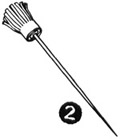
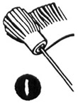
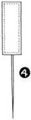
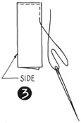
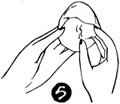
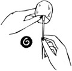
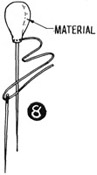
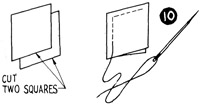
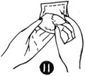
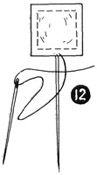

1952—How to Make Hats
by Ruby Carnahan
Hat Pins
FRINGED FELT HAT PINS
For each hat pin cut a strip of felt 2" x 1 1/2". Slash one side of felt strip very close together and 3/4" deep, making a fringed edge. (Illus. 1) Wrap the other side of felt strip around the head of a small hat pin, lap end over and sew felt flat. Also take a few stitches at bottom of fringed felt and pull thread tight and fasten securely, forming a tassel of felt on pin (Illus. 2).
LARGE ORNAMENTAL HAT PINS
(Illus. 3). Cut a piece of lining 2" x 2" and fold lengthwise. Sew each side and bottom together. Slip a hat pin through top opening, let pin protrude at bottom. Stuff bag with cotton and sew top together. Cut material for outside covering of hat pin same as above, sew together, slip over hat pin base (Illus. 4). Gather material around bottom of pin and sew securely. Bead these pins elaborately and use for trimming.
SMALL MATCHING HAT PINS
Cut circles of lining, gather around bottom and stuff circle with cotton (Illus. 5).
Slip hat pin head in (Illus. 6) draw, gather together, and fasten (Illus. 7).
Cut matching hat material as above and slip over hat pin base, gather around pin and fasten securely (Illus. 8).
FELT PINS
Cut felt in small circles, squares or oblong shapes. Sew two pieces same shape together 1/4" from edge of felt (Illus. 10).
Stuff center with cotton (Illus. 11) and slip hat pin head between felt pieces.
Sew securely around pin (Illus. 12).